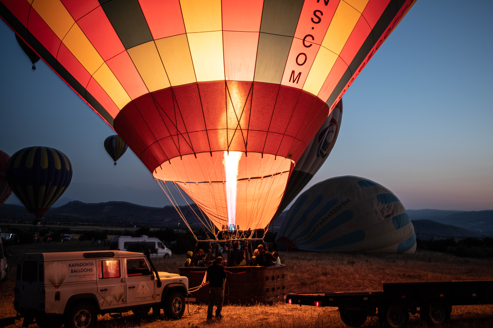
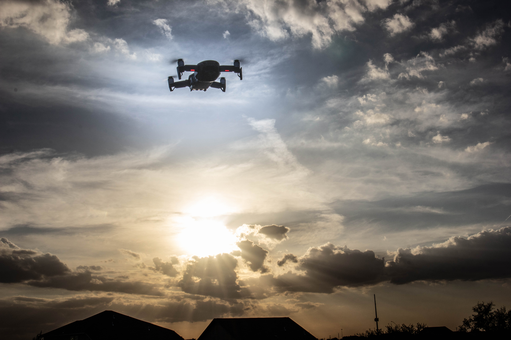
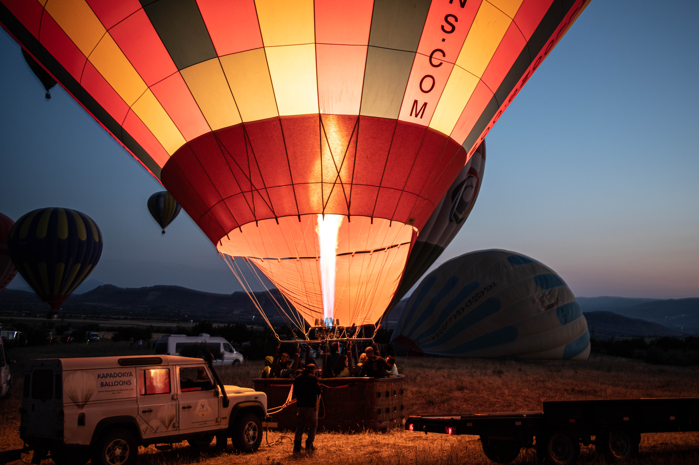
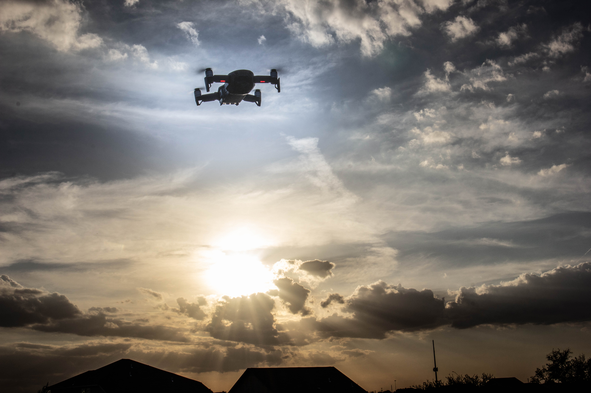
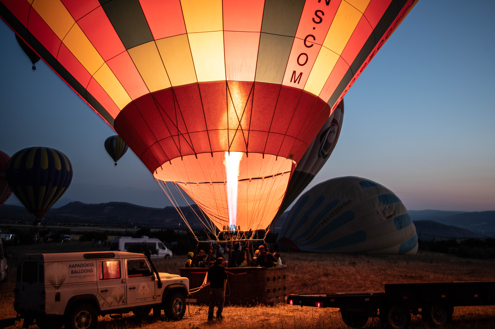
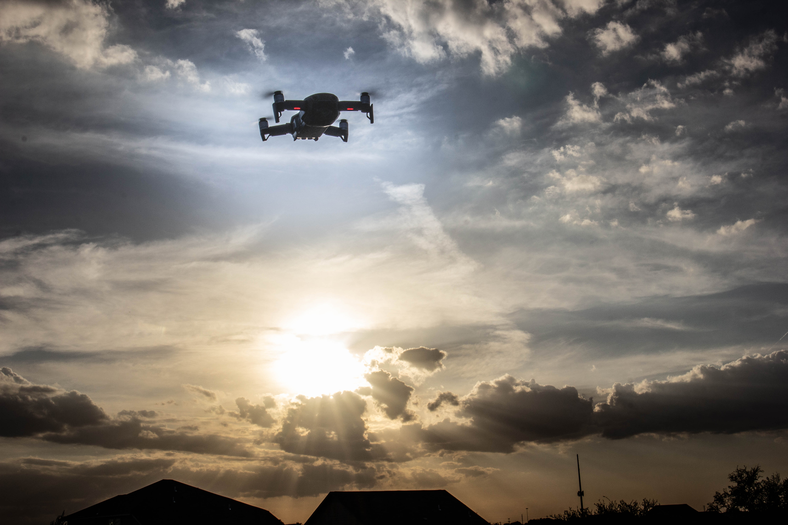

 Hello to my dear visitors! This is my first website created in Github. Something about myself that I would like to talk about is my hobbies. I like building gaming rigs, play volleyball and do a little bit of photography. These are the three things that keep me occupied and something to look forward for the weekends.
Build gaming rigs is probably the easiest and less effort since it just takes research. I used to research more on compatibilities, availability and best deals but recently it has been easier to find all the components I want. With the exception of the video cards, using various websites helps in PC building. This is where I find most of the computer components I need when building gaming PCs.
Playing volleyball is where I find most of the fun and excitement. I trained and joined several tournaments to develop my skills. I also watch professional games online and learn techniques. This is where I watch volleyball games. By the way, France is my favorite Team and Earvin Ngapeth is my favorite player.
Lastly, photography is probably the only skill and hobby I have where I can consider myself creative. I am just a hobbyist and still learning. I also like to travel and I associate my travel with photography. Check out the photos below. Hope you like them!


I shoot Canon by the way and this is where I get some of my gears